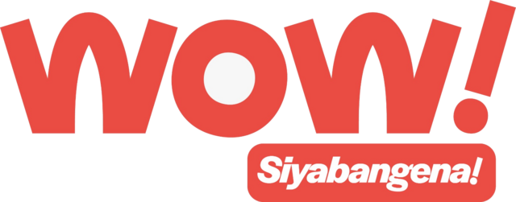
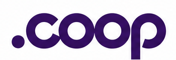
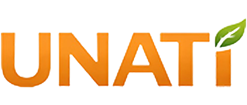

Pre-revenue investor conceptUSD 30m primary raise and milestone earn-out are illustrative terms for discussion · not agreed
02 / EXECUTION
Different use cases. One test: repeat activity.
FORUS is pre-revenue. The August materials show a reported completed pilot, a signed distribution partnership and programmes in development. Each has a different path from engagement to paid platform use.

Pilot reported completeWOW transport · South Africa
A fuel rebate for Eastern Cape taxi operators creates a direct reason to use the network. The August investor pack reported a completed pilot; participant, transaction and retention results were not included. A funded rollout would need to demonstrate repeat use and net economics.
Transport · payments and operator benefits ↗
Signed partnershipDotCooperation · Africa
Trusted .coop identities offer a distribution channel to cooperative organisations. The partnership establishes a route to market; resulting registrations, active organisations and commercial revenue remain to be measured.
Identity · cooperative distribution ↗
Pilot in developmentUnati · India
A July 2026 MoU describes a cooperative-led programme. It tests whether member operations, payments and market access can be configured on the shared platform in another market.
Agriculture · livelihoods ↗F
Public platformFORUS.coop
The cooperative ecosystem demonstrates a public FORUS interface. It is operated by FORUS Digital Cooperative, which is a separate legal entity from the proposed investee.
Cooperative ecosystem · separate operator ↗THE CONVERSION PATH
What turns interest into platform revenue.
ContractDefine partner economics, launch scope and responsibility.
ActivateOnboard organisations, merchants and people who can use the service.
TransactObserve real usage and measure realised revenue and settlement.
RetainProve repeat behaviour, margins and cash collection after a pilot.
AUGUST 2026 PIPELINE
Reach estimates are an opportunity, not a user count.
Seven of ten listed programmes include partner-stated estimates.
| Geography | Programmes | Stated minimum | Full stated potential |
|---|
| South Africa | 4 | 3.2m | 14m |
|---|
| United States | 1 | 1m | 25m |
|---|
| India | 1 | 1m | 25m |
|---|
| Dubai | 2, one unquantified | 0.2m | 1m |
|---|
| Global channels | 2, both unquantified | — | — |
|---|
| Total | 10 | 5.4m | 65m |
|---|
Source: “Pipeline August 2026” in the investor folder. Estimates are neither signed volume commitments nor active users. No conversion rate was supplied, and the snapshot does not establish booked revenue.